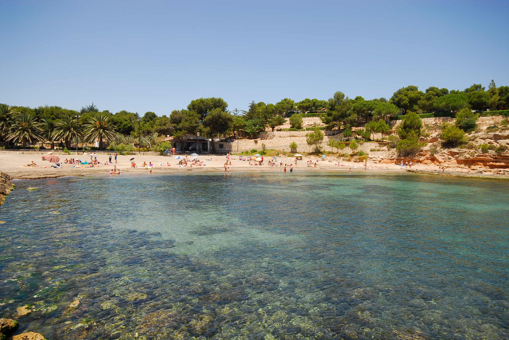
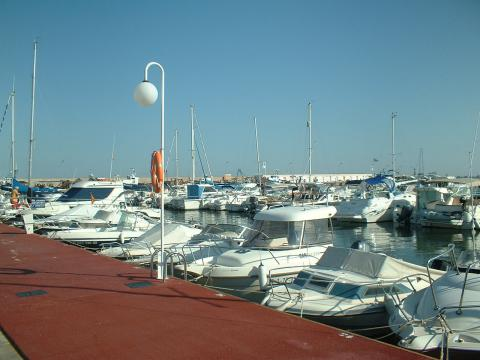

Atrás
L'Ametlla de Mar
Playa Bandera Azul de Sant Jordi d'Alfama
Playa Bandera Azul Cala Forn

Playa Bandera Azul de Pixavaques
Playa Bandera Azul de l'Alguer

Club Náutico Ametlla de Mar
Zona Mareal
Las Aves Marinas
Las Lagunas
Posidonia oceanica
Acantilados Costeros
Vegetación Supralitoral
Portada
Mapa